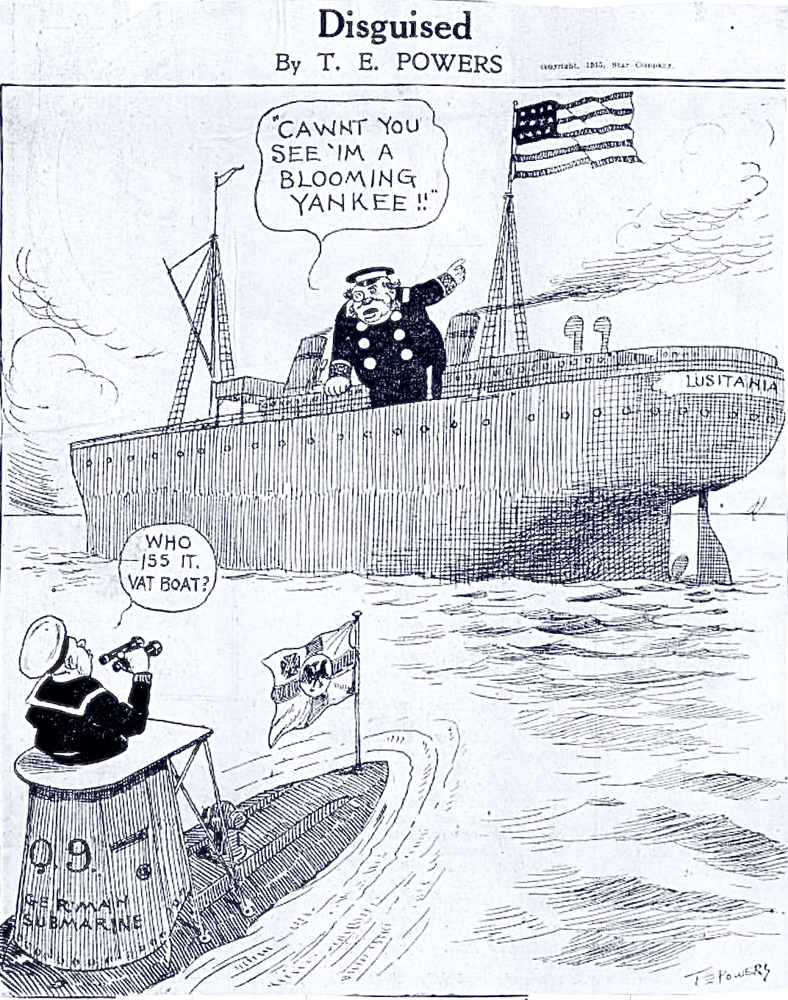

Chapter 1
The Queen of the Atlantic
The Liverpool landing stage held the Lusitania on the afternoon of 25 July 1914, and the river Mersey ran thick with small craft come to see her off. Whistles sounded from tugs and ferries. Passengers crowded the rails. The ship’s brass gleamed. In the first-class dining saloon, stewards laid out silver and crystal for dinner service, while on the bridge, officers checked the telegraph that would signal the engine room when the time came to proceed. The liner would carry nearly two thousand people across the Atlantic that summer, among them businessmen, tourists, families returning to America, and a cargo manifest that listed ordinary goods: cotton, copper, meat, and a quantity of furs. No one aboard knew that this would be the last normal departure the ship would ever make.
The RMS Lusitania had entered service seven years earlier, in September 1907, and from the first she was meant to answer a German challenge. The Hamburg America Line and Norddeutscher Lloyd had been building faster, larger, more luxurious ships, and their vessels had taken the Blue Riband, the unofficial prize for the fastest Atlantic crossing, away from British lines. Cunard responded with a pair of ships designed to reclaim that honor and hold it. The Lusitania and her sister Mauretania would be the largest passenger vessels in the world, powered by a new kind of engine, and built with funds borrowed from the British government on the condition they be capable of maintaining a minimum average speed of 24 to 25 knots.
That loan came with conditions. In times of war, the ships could be taken up as armed merchant cruisers. Their hulls included compartments for mounting guns. Their speed would let them outrun almost any threat. They were commercial vessels, yes. They were also national assets.
The maiden voyage began on a Saturday. The Lusitania, commanded by Commodore James Watt, moored at the Liverpool landing stage at half past four in the afternoon on 7 September 1907, taking the place of the previous Blue Riband holder, the Lucania, which vacated the pier to make room. A crowd of 200, 000 people gathered to see her departure. The ship was 785 feet long, with four funnels painted in Cunard’s distinctive red-and-black livery. Her revolutionary turbine engines produced 68, 000 horsepower. On her trials that summer, she had averaged 25.6 knots over a measured mile and 25.35 knots on a 24-hour run. The turbines ran more smoothly than the reciprocating engines used on older ships, and they took up less space, leaving more room for passengers and their baggage.
The crossing took five days and fifty-four minutes. The Lusitania did not set a record on that first voyage; the weather had been rough. But she proved the concept. In November, on her second attempt, she took the Blue Riband westbound, and in September 1908 she claimed the eastbound record as well. Over her eight-year career, she would make 201 crossings on the Liverpool-New York route. The Mauretania would eventually surpass her sister in both directions, but the Lusitania had shown what British shipbuilding could do. A Royal Mail Ship, she carried letters and parcels under contract with the Post Office. As a passenger liner, she carried people in three classes of accommodation. The vessel served as a symbol of maritime supremacy, a floating demonstration of engineering prowess and commercial ambition.
The turbine engines made the difference. Cunard had sent representatives to watch trials of the Carmania, an earlier vessel fitted with turbines, and compared her performance to that of the Caronia, which used traditional reciprocating engines. The turbine ship proved faster and more efficient. A committee formed by the Admiralty and the Board of Trade examined the results and recommended the new technology for the express liners. The decision was not without risk. Turbines had been used in naval vessels, but passenger ships required reliability over long periods, and the technology was still relatively new. Cunard’s directors took the chance. The shipyards at Clydebank, owned by John Brown & Company, built the hull and fitted the engines. The work took two years.
The Lusitania’s first-class accommodations occupied the central section of the ship, rising through several decks. The dining saloon seated more than four hundred at a time, with tables arranged between pillars decorated in the Adam style. A lounge ran the full width of the vessel, furnished with settees and writing desks. A smoking room offered leather chairs and a view aft. There were private suites with bedrooms and sitting rooms, and more modest cabins for those who could not afford the highest fares. Lifts carried passengers between decks. Electric lights illuminated the public rooms. Wireless telegraphy allowed the ship to send and receive messages at sea. These were not novelties; they had appeared on earlier liners. But the Lusitania brought them together in a single vessel larger and faster than any that had come before.
The passengers who traveled in first class were, for the most part, people of means. They crossed for business, for pleasure, for family reasons. The ship’s passenger lists included names that appeared in newspapers: industrialists, politicians, actors, heirs. The social ritual of the Atlantic crossing meant that they dined together, walked the promenade deck together, attended concerts and dances organized by the ship’s orchestra. The crossing was not merely transportation. It was an event. The Lusitania’s reputation for speed meant that the voyage took less time than on other lines, and for those whose schedules mattered, that was worth paying for.
Second class offered comfort at a lower price. The cabins held two or four berths. The dining room served meals at fixed hours. The public rooms were smaller but still well-appointed. Third class, known on some lines as steerage, had improved considerably from the conditions of earlier decades: passengers slept in cabins rather than open dormitories, with access to open decks and basic amenities. Many were emigrants leaving Europe for new lives in America; others were laborers traveling for work. The mix of nationalities aboard—British, American, Irish, German, Scandinavian, Italian—made the ship a small floating city.
The crew numbered around eight hundred. Stewards and stewardesses attended the passengers. Cooks and bakers worked the galleys. Engineers and firemen tended the boilers and turbines in the spaces below the waterline. The deck officers navigated, kept watch, and handled the business of arrival and departure. The captain held ultimate authority. On the Lusitania’s maiden voyage that had been Commodore Watt, a senior figure in the Cunard Line. Later voyages were commanded by other experienced officers, men who had worked their way up through the ranks over years or decades.
The competition that had prompted construction did not disappear after launch. The White Star Line was building its own class of large liners: Olympic, Titanic, Britannic, designed to compete on size and luxury rather than speed; they were almost 100 feet longer and 15, 000 tons larger than the Cunard vessels.
The ship’s design included features meant to satisfy Admiralty requirements for possible wartime use. Gun-mounting compartments remained empty in peacetime; structural supports were there.
The summer of 1914 found the Lusitania on her regular route between Liverpool and New York, with stops at Queenstown in Ireland to pick up additional passengers and mail. The political situation in Europe had grown tense. Austria-Hungary and Serbia were in conflict after the assassination of Archduke Franz Ferdinand in Sarajevo at the end of June. Alliances drew the major powers toward involvement. Russia began to mobilize. Germany declared war on Russia on 1 August, and on Russia’s ally France two days later. Britain, bound by treaty to Belgium, issued an ultimatum when German troops crossed the Belgian border. The ultimatum expired at midnight on 4 August. Britain was at war with Germany.
The Lusitania was at sea when war came. She left New York on 1 August carrying passengers toward Liverpool; wireless brought news; her captain proceeded with caution; speed was her best defense but not against every threat; German submarines existed though limited in range; her size made her potential target; she docked without incident on 6 August.
Admiralty took Mauretania shortly after war began, converting her for troopship then hospital ship; Lusitania remained commercial, valuable for moving passengers/cargo; perhaps Admiralty calculated greater good transporting goods/people than sitting reserve—or simply not needed yet—war believed short—German Army stopped—German Navy contained by blockade—no need disrupt transatlantic trade more than necessary.
The ship’s peacetime routine continued, with adjustments. The passenger lists grew shorter as some travelers canceled their plans. The cargo manifests shifted to include goods related to the war effort—copper, steel, chemicals—but also ordinary commercial items. The Lusitania still carried mail, still carried emigrants in third class, still carried wealthy passengers in first. The dining saloon still set out crystal and silver. The stewards still made up the cabins. The crossing remained, for those aboard, a journey from one side of the ocean to the other, undertaken in conditions of comfort and safety that had become routine over decades of steamship travel.
Safety of sea lanes was assumption so deep rarely articulated. Ships crossed Atlantic regularly nearly century; major lines competed speed/luxury not survival attack; passengers chose cabins price/position not proximity lifeboats; lifeboats required law but regarded equipment storms/collisions/mechanical failures not war; idea civilian passenger vessel deliberately attacked lay outside experience most travelers/shipowners.
The German Embassy in Washington, D.C., would later place notices in newspapers warning that vessels flying the British flag were liable to destruction in the war zone around the British Isles. That warning would appear in New York papers in May 1915, just before the Lusitania’s final departure. But in the summer of 1914, no such warnings had been issued. The German submarine arm was new, small, and not yet regarded as a decisive threat. The British Navy had blockaded Germany’s ports, cutting off maritime trade, but the Germans had not yet declared unrestricted submarine warfare against British shipping. The rules of cruiser warfare—requiring submarines to surface, warn, and allow passengers and crew to abandon ship before sinking a vessel—still applied.
The Lusitania’s last normal crossing began at Liverpool on 25 July 1914. The passengers who boarded that day came from many countries. British subjects returning home stood among Americans who had been traveling in Europe and now hurried back across the Atlantic. Emigrants leaving Europe for good found their places in third class. The cargo included furs, cotton, copper, and meat—goods that would fetch prices in British markets. The crew performed their duties as they had on previous voyages. The ship’s officers followed the established course, heading northwest past Ireland, then west across the open ocean toward New York.
The weather was fair. The ship made good time. The passengers dined, walked the decks, read in the lounges, wrote letters that would be posted when they arrived. The wireless operator handled messages to and from shore stations and other ships. The engine room maintained the speed that had made the Lusitania famous. The bridge kept watch for other vessels, for fog, for any hazard of the sea. There was no reason to expect anything unusual. The ship had crossed the Atlantic dozens of times. She would cross it again.
The Lusitania arrived at New York on 2 August, the day after Germany declared war on Russia. The city’s newspapers carried headlines about the crisis in Europe. The passengers disembarked, collected their baggage, and went about their business. The crew prepared the ship for the return voyage. The cargo was unloaded and new cargo loaded. The passengers for the eastbound crossing—those who had booked passage before the war began, and those who now decided to travel despite the news—came aboard. The ship left New York on 8 August, carrying a smaller complement than usual but still a substantial number of people. She arrived at Liverpool six days later, having made the crossing without incident.
The war changed the context in which the Lusitania operated, but it did not immediately change the operation itself. The ship continued to sail. The passengers continued to book passage. The cargo continued to be loaded and unloaded. The British government had not requisitioned the vessel. The German government had not declared that passenger liners were legitimate targets. The transatlantic trade that had built the Lusitania, that had justified her construction and sustained her operations, continued to flow. The ship was a commercial vessel, carrying civilians and goods across a body of water that had been traversed safely by millions of people over decades.
The Admiralty knew things that the passengers did not. The naval intelligence division, operating out of Room 40 in the Old Admiralty Building, had begun to intercept and decode German wireless transmissions. The German Navy used radio to communicate with its ships at sea, and the British had acquired the codebooks that allowed them to read those messages. The existence of Room 40 was a closely guarded secret. The information it produced was shared only with a small circle of senior officers and government officials. The captains of merchant vessels like the Lusitania did not receive detailed intelligence about German submarine movements. They were given general warnings about areas of danger, but not the specific information that might have allowed them to avoid those dangers entirely. The silent map of submarine positions was being drawn in the Admiralty’s inner offices, but it would not reach the bridge of the Lusitania.
The German submarines, the U-boats, had begun to operate in the waters around the British Isles. Their targets were naval vessels and merchant ships carrying war supplies. The rules of engagement required them to follow cruiser warfare procedures: surface, warn, allow the crew to abandon ship, then sink the target with gunfire or explosives. Those rules were difficult to follow in practice. A submarine on the surface was vulnerable to attack from the vessel it had stopped, or from other naval forces that might arrive before the process was complete. The British had begun to arm some merchant ships, blurring the line between civilian and military targets. The Germans had begun to consider whether the rules of cruiser warfare still applied in a conflict where the British blockade was starving the German population.
The Lusitania, for her part, continued to operate as she always had. Her owners, the Cunard Line, advertised her speed and comfort. Passengers who chose her for a crossing in late 1914 or early 1915 found a ship that was, in most respects, the same vessel that had entered service in 1907. The dining saloon still served multi-course meals. The first-class lounges still offered space for conversation and cards. The third-class cabins still held emigrants bound for new lives. The crew still performed their duties. The ship still flew the British flag. She was still a Royal Mail Ship, still a potential naval auxiliary, still a symbol of British maritime power. She was still, in the eyes of those who boarded her, a safe way to cross the Atlantic.
The contradiction at the heart of the Lusitania’s existence—the tension between her civilian purpose and her symbolic importance—had been present from the beginning. She was built to carry passengers and mail. She was also built to demonstrate British engineering, British commercial ambition, British naval potential. Her speed records were commercial achievements and national triumphs. Her luxury was a selling point and a statement of cultural superiority. The German lines that had prompted her construction were competitors in a business, but they were also representatives of a rival power. The transatlantic trade was a market, but it was also an arena where nations competed for prestige.
The war sharpened those contradictions. The Lusitania was a British ship in a time of war between Britain and Germany. She carried passengers who were citizens of neutral countries, including the United States. She carried cargo that included goods useful for the war effort. She sailed routes that passed through waters where German submarines operated. She was a civilian vessel, but she was also a legitimate object of national pride and a potential target for an enemy seeking to disrupt British trade and intimidate British civilians. The categories that had seemed clear in peacetime—civilian and military, neutral and belligerent, safe and dangerous—were becoming confused.
The passengers who boarded the Lusitania in the summer of 1914 did not know that they were traveling on a ship that would become infamous. They did not know that within a year, the vessel would be at the bottom of the Atlantic, that hundreds of those aboard would be dead, that the sinking would provoke a diplomatic crisis between the United States and Germany that would eventually help bring America into the war. They knew only that they were crossing the ocean on a fast, comfortable, well-regarded ship. The danger that would find the Lusitania in May 1915 was not yet visible. The sea lanes were still open. The ocean was still a space of transit, not a battlefield.
The ship’s final peacetime departure from Liverpool, on 25 July 1914, looked much like any other. The passengers gathered at the landing stage. The crew stood at their stations. The tugs maneuvered the vessel away from the pier and into the channel. The Lusitania’s engines turned over, and the ship began to move, gathering speed as she passed down the Mersey and out toward the Irish Sea. The crowds on shore watched her go. The passengers on deck waved goodbye. The ship’s officers kept watch. The stewards prepared for dinner. The wireless operator settled at his set. The engine room maintained the revolutions. The crossing had begun.
The Lusitania sailed west that day, toward Queenstown, toward the Atlantic, toward New York. The sun set. The stars came out. The passengers slept in their cabins, or walked the decks, or sat in the lounges reading or talking. The ship moved through the darkness, her running lights visible for miles across the water. Other vessels passed at a distance, their lights similarly visible, their courses similarly set. The Atlantic was a highway, traveled by many ships, governed by rules and customs that had developed over generations. The Lusitania was one vessel among many, carrying her passengers and cargo from one shore to another. The routine was unbroken. The confidence was unshaken.
The Lusitania sailed into an Atlantic where safety was still an unquestioned assumption, a confidence about to be shattered.
